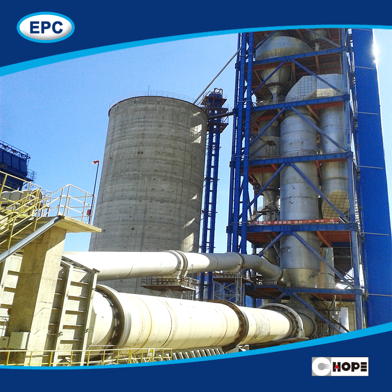

Rotary kilns are used to uniformly
heat lime, cement, carbon, fertilizer, stone and other aggregate
materials. As the kiln turns the heated material is mixed, and
new material becomes exposed to the flames and hot combustion gasses.
Kilns are typically heated by a large flame introduced at the
exit end of the process. The hot combustion gasses are then
passed along the length of the kiln in a counter-flow direction.
Many plants capture the hot gasses as they escape the entry
end, and use this heat to pre-heat the product before it enters the
kiln.
Kiln plants with two and three station rotary kilns from
KHD Humboldt Wedag are top of the line. One reason: highly efficient
precalcining systems, which were developed by KHD Humboldt Wedag,
revolutionizing the clinkering process.
Rotary kilns no
longer have to function as calciners which mean that they can be
substantially smaller in size. The advantage for customers is lower
investment and operating costs. These systems quickly gained
excellent reputations among our customers.
Rotary
dryers are almost always used for drawing moisture out of a
material. Typically, they operate at temperatures between 800º –
1400ºF. Rotary kilns, however, are concerned with causing a chemical
reaction. Therefore, they need to operate at much higher
temperatures, between 1000º – 3000º.
Rotary kilns are designed to withstand much higher temperatures than a rotary dryer. Typically, if you are dealing with a direct fired rotary kiln, it is refractory lined with a brick or castable lining. This lining protects the steel shell. Rotary dryers are typically not lined, and their steel is not able to withstand such high temperatures. If you are dealing with an indirect rotary kiln, the kiln is not normally lined, so the shell of the drum has to be made out of a temperature resistant alloy instead of steel.